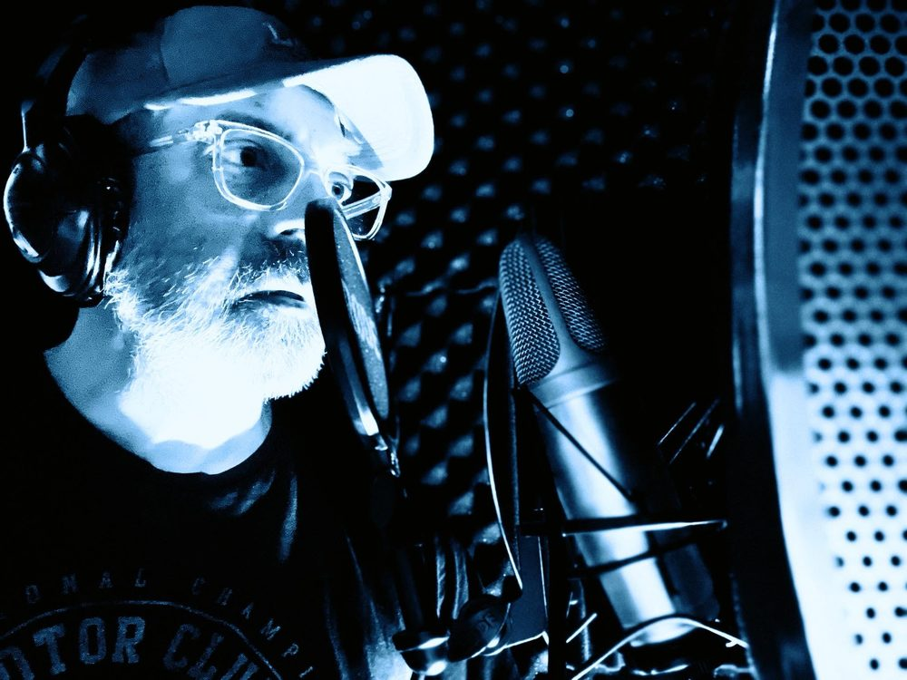
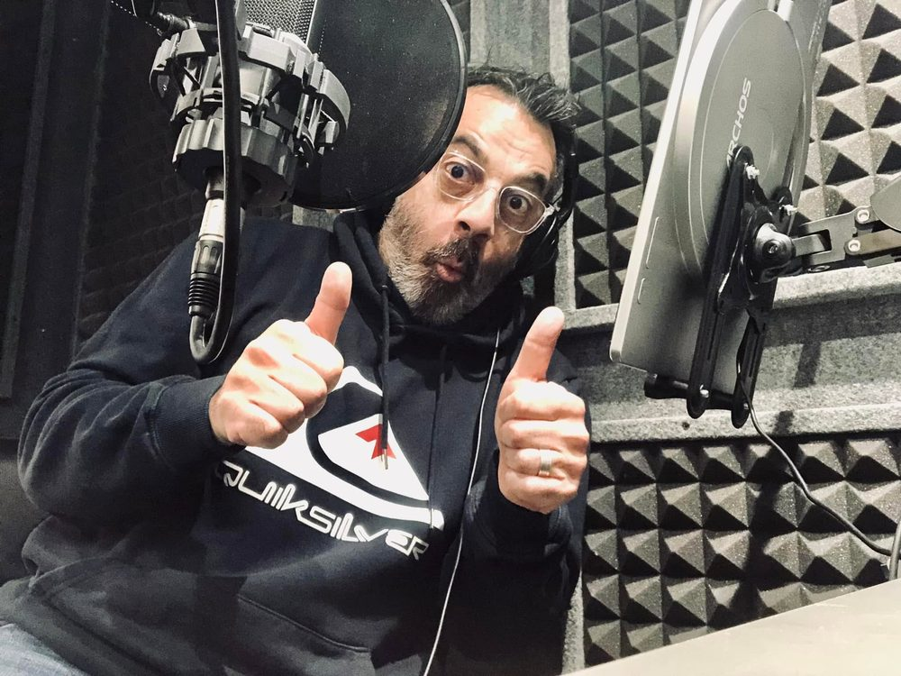
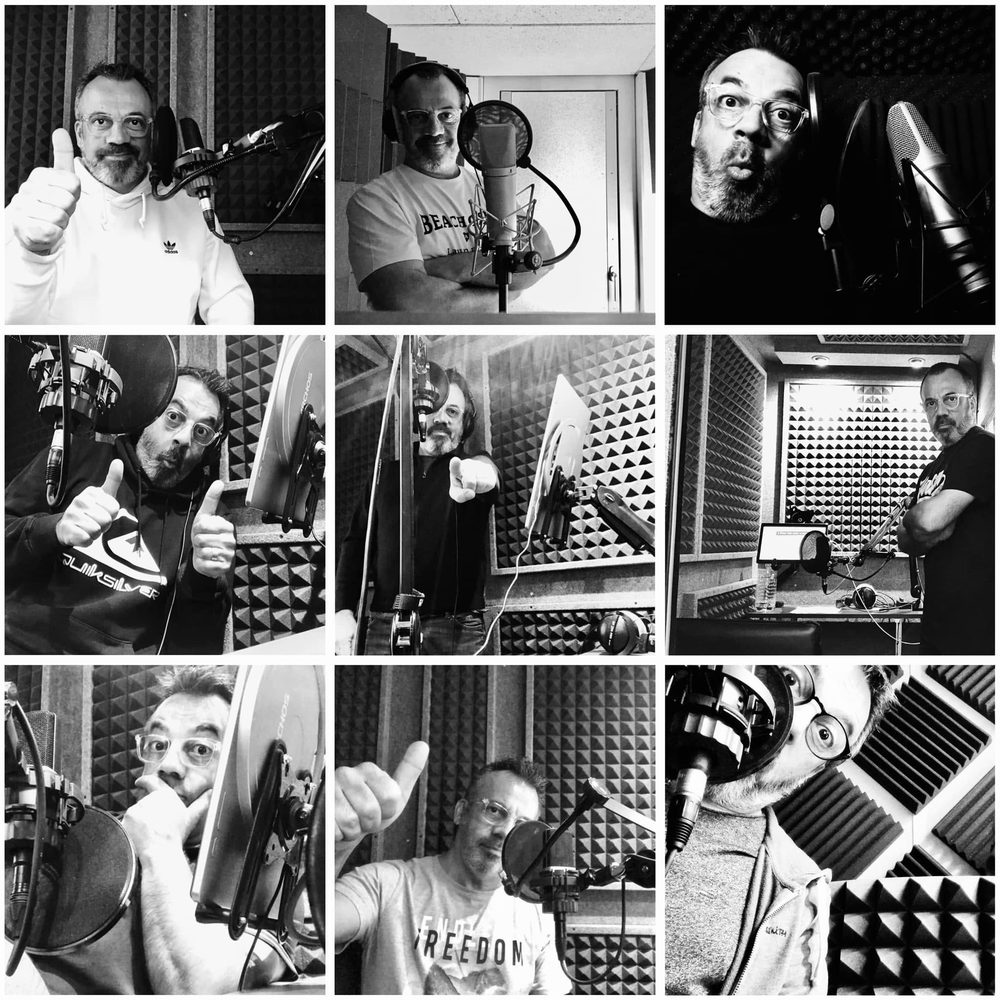
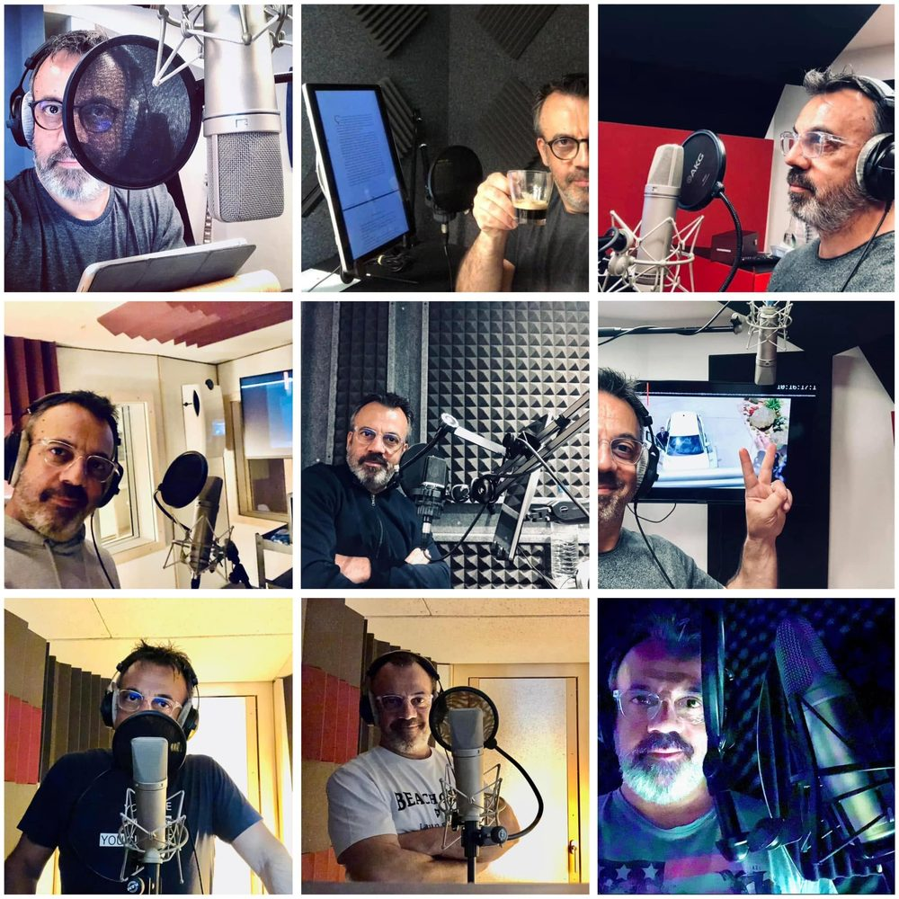

Les aveugles et malvoyants
ont AUSSI droit aux histoires !
Une histoire, ça se vit… ça se lit. Avec les yeux. Mais alors, les personnes malvoyantes et aveugles n'auraient pas le droit aux histoires émouvantes ? Le droit de ressentir des émotions — émouvantes, tristes, drôles… ?
🎧 C'est en route : 4 histoires vous attendent !
Le projet a démarré pour de vrai. Les 4 premières histoires sont déjà enregistrées et disponibles gratuitement à l'écoute.
▶ Écouter les histoiresDisponible aussi sur vos plateformes d'écoute habituelles.
Le projet
J'écris de courtes histoires — de quoi surprendre, sourire, ou pleurer. Elles sont réunies dans mes livres, en vente au grand public.
Mais je me suis posé une question toute bête : et les personnes qui ne voient pas ? Elles aussi ont droit aux histoires. C'est de là qu'est née l'envie de créer cet espace : une version audio, pensée pour être écoutée, et totalement gratuite pour les personnes aveugles et malvoyantes.
Une page pensée pour vous
Cette page n'est pas une page ordinaire à laquelle on aurait « ajouté » de l'audio. Elle est conçue dès le départ pour les lecteurs d'écran et les outils de navigation des personnes aveugles : structure claire, titres repérables, liens explicites, contrastes forts.
Une vraie voix, professionnelle
J'y tenais : pas une voix de synthèse, mais un vrai comédien. Ces histoires sont lues par Hervé Carrascosa, une voix professionnelle qui prête aussi sa voix à des publicités et des documentaires.
Le résultat m'a bouleversé. Même en connaissant mes textes par cœur, je les ai écoutés avec des frissons — et j'ai versé une larme. Une belle voix ne fait pas que lire les mots : elle donne vie aux histoires, elle les fait vibrer.




Voix : Hervé Carrascosa
Ce que ça coûte
Je vais être honnête avec vous. Faire enregistrer ces histoires par une vraie voix — avec la narration, le nettoyage du son et un rendu propre — représente un vrai budget. C'est compréhensible : il y a le matériel, le studio, et surtout beaucoup d'heures de travail. Un bon travail se paie, et je le respecte.
Le prix de vente de mon livre sur Amazon, 12,50 €, inclut aussi bien les frais d'Amazon, les frais d'envoi, les taxes sur les livres, les impôts et l'Urssaf. Et aussi la publicité, le site web, etc. Bien sûr, je ne compte pas mes soirées passées sur mon ordinateur. Écrire reste pour moi un plaisir, un loisir — pas une source de revenus. Et je suis encore loin d'avoir couvert mes premières dépenses de fabrication et de promotion.
Un coup de main pour la suite ?
4 histoires sont en ligne… mais il en reste 12 à enregistrer ! Pour continuer à offrir ces histoires gratuitement aux personnes aveugles et malvoyantes, j'ai ouvert une cagnotte. Chaque participation, même petite, aide à financer l'enregistrement des voix.
Soutenir le projetCette page continuera d'évoluer au fil des enregistrements.
Elle sera aussi améliorée en tenant compte des retours des personnes aveugles et malvoyantes qui la testeront. Si vous rencontrez la moindre difficulté pour naviguer ou écouter, votre avis me sera précieux.